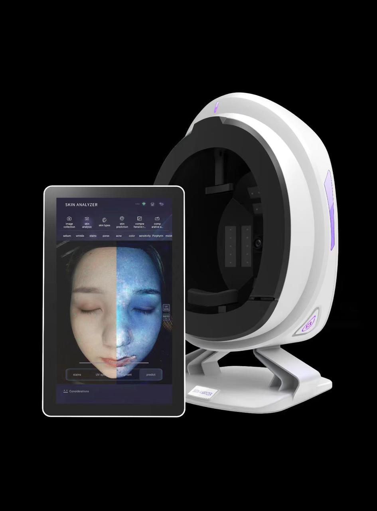
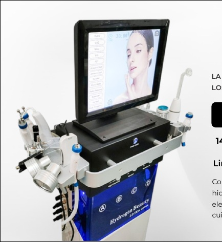
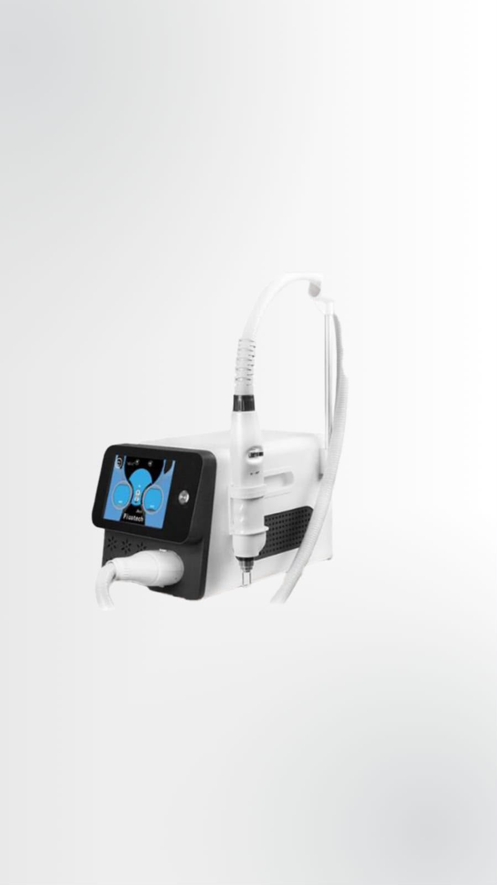
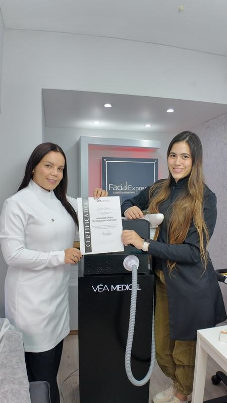

01
VÉA Intelligence
Diagnóstico facial con inteligencia artificial para convertir evaluación clínica en claridad, confianza y mejor conversación con el paciente.
Conocer másTransformamos la incorporación de tecnología en una estrategia de crecimiento clínico, respaldada por experiencia, metodología y acompañamiento continuo.
Entender antes de invertir.
Convertir tecnología en protocolos y experiencia.
Medir impacto clínico y económico.



Presentamos cada tecnología con el mismo lenguaje visual: elegancia, claridad clínica y una percepción premium alineada con la marca.
Diagnóstico facial con inteligencia artificial para convertir evaluación clínica en claridad, confianza y mejor conversación con el paciente.
Conocer másPlataforma de infusión inteligente diseñada para integrar activos profesionales dentro de protocolos personalizados con una experiencia clínica premium.
Conocer másPlataforma Nd:YAG para corrección de pigmentos, remoción de tatuajes y protocolos Hollywood Peel — precisión clínica con cuatro longitudes de onda.
Conocer másExplora cada etapa del proceso. El contenido cambia para mostrar cómo VÉA acompaña a la clínica antes, durante y después de la implementación.
Analizamos tu clínica de manera integral antes de recomendar cualquier tecnología.
Cada implementación es distinta. El Método VÉA 360° se adapta al tipo de clínica, a la madurez del equipo y al objetivo de crecimiento de cada aliado.
Hablar con un Clinical Technology Partner →La tecnología solo tiene valor cuando existe un criterio para elegirla, una metodología para implementarla y un acompañamiento real para transformarla en crecimiento sostenible.

Formación clínica, práctica supervisada y protocolos para que cada implementación se viva como una experiencia segura, profesional y alineada con el estándar VÉA.